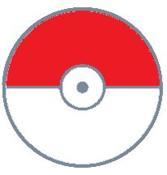

<ion-footer class="ion-hide-sm-up">
  <ion-toolbar>
    <ion-grid>
      <ion-row class="ion-justify-content-around">
        <ion-col class="ion-align-self-center" size="2">
          <ion-icon (click)="utilsService.goBackToPokedex()" class="home-icon" name="home-outline"></ion-icon>
        </ion-col>
        <ion-col *ngIf="currentUser.userName" size="3">
          <ion-button (click)="handleNavigation('team')" [disabled]="!currentUser.login" color="light">
            
            <ion-badge color="danger">{{userService.getPokemonTeam().length}}</ion-badge>
          </ion-button>
        </ion-col>
        <ion-col class="ion-align-self-center" size="2">
          <ion-icon (click)="presentPopover($event)" class="user-icon" name="person-circle-outline">
          </ion-icon>
        </ion-col>
      </ion-row>
      <ion-content>
        <ion-popover #popover (didDismiss)="isOpen = false" [isOpen]="isOpen">
          <ng-template>
            <app-user-popover (open)="dismiss($event)"></app-user-popover>
          </ng-template>
        </ion-popover>
      </ion-content>
    </ion-grid>
  </ion-toolbar>
</ion-footer>
